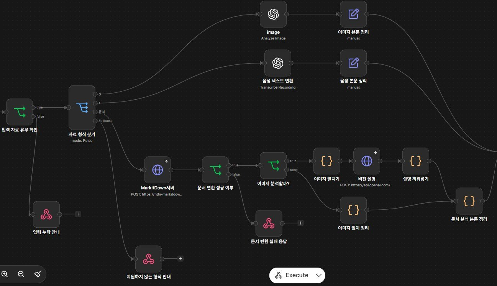
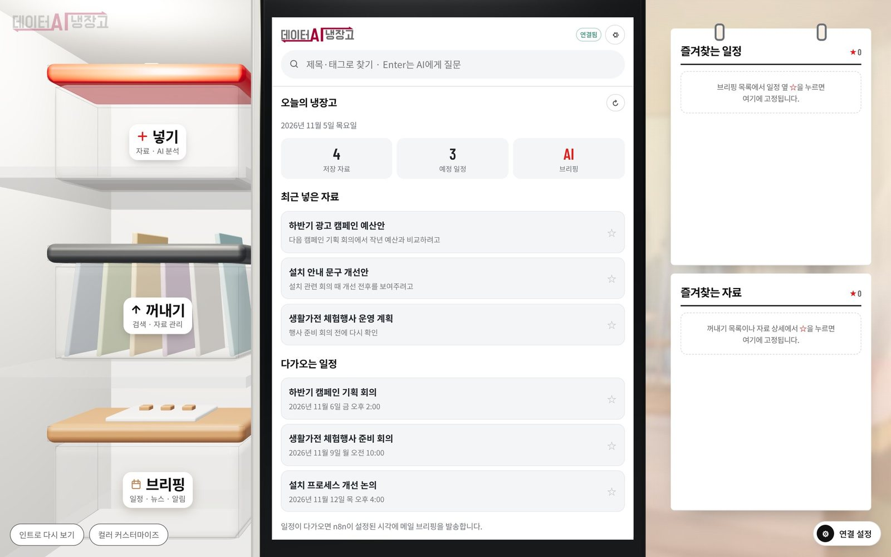

기획한 흐름을 직접 화면으로 만들어 본 사람입니다.
건축을 전공했고, SSAFY 14기에서 웹 서비스 세 개를 팀으로 만들었습니다. 세 프로젝트 모두 화면 흐름을 정하는 일과 그 화면을 직접 구현하는 일을 같이 맡았고, 세 번 다 상을 받았습니다.
이어서 LG전자 K-뉴딜 아카데미 AX 워크플로우 트랙에서 n8n으로 업무 자동화 서비스를 만들어 5개 팀 중 1위로 수료했습니다.
- 학력
- 계명대학교 건축학과 (5년제) 졸업
- 교육
- SSAFY 14기 수료 · LG전자 K-뉴딜 아카데미 1기 AX 워크플로우 트랙 수료
- 인턴
- 오후건축사사무소, 계획안 모형·3D 모델링·건축 일러스트
- 수상
- LG전자 K-뉴딜 아카데미 AX 트랙 팀 우수상 (1위 / 5개 팀)
SSAFY 14기 공통 프로젝트 최우수상, 특화 우수상, 자율 우수상
프로젝트
큰 화면을 누르면 GitHub에서 원본 화면과 시연 영상을 볼 수 있습니다데이터 냉장고
저장한 이유가 다시 필요해질 때 AI가 자료를 꺼내주는 사내 지식 서비스. 자료 입고 흐름과 웹 화면을 맡았습니다.
팀 우수상 · 1위2026.10–11DocQ
PDF를 AI 퀴즈로 바꿔 최대 4명이 보드게임처럼 푸는 학습 서비스. UX 방향과 게임 밖 화면 전반을 맡았습니다.
공통 최우수상2026.01–02Would You Draw
그린 감정이 별, 별자리, 은하로 쌓이는 감정 기록 앱. FE 팀장으로 드로잉과 우주 인터랙션을 맡았습니다.
특화 우수상2026.03Jabis
양팔 데스크 로봇의 상태를 3D로 보여주는 웹 대시보드. 팀의 유일한 FE로 대시보드 전체를 맡았습니다.
자율 우수상2026.04–05
- 기획·협업
- Figma, Jira, Canva, Claude Code
- 자동화
- n8n, FastAPI, Docker
- 개발
- React, Vue 3, TypeScript, Three.js
- 그래픽
- Blender, Photoshop, AutoCAD, SketchUp
데이터 냉장고
팀 우수상 · 1위자료를 저장할 때 '왜 저장하는지'를 같이 남겨두면, 나중에 그 이유가 다시 필요해졌을 때 AI가 자료를 꺼내주는 사내 서비스입니다. LG전자 AX 트랙 팀 프로젝트입니다.


자료가 들어오는 입구와 웹 화면을 맡았습니다. 어떤 형식의 파일이 들어와도 AI가 읽을 수 있는 카드로 바꾸는 흐름을 n8n으로 만들었고, 팀원 버전과 비교한 뒤 이 구조가 팀 기본안이 됐습니다. 프로젝트는 5개 팀 중 1위로 팀 우수상을 받았습니다.
AI 결과는 그대로 저장하지 않게 했습니다. 요약과 태그는 초안으로만 만들고, 사람이 확인하고 고쳐야 저장됩니다. 테스트하다가 깨진 파일이 '변환 성공'으로 통과하는 걸 발견해서, 실패를 네 가지로 나눠 각각 다른 안내를 띄우게 했습니다.
화면은 냉장고 그대로 만들었습니다. 반찬통을 열면 넣기, 꺼내기, 브리핑으로 들어가서, 처음 보는 사람도 자료를 넣는 곳과 꺼내는 곳을 바로 구분할 수 있게 했습니다.
DocQ
공통 최우수상PDF를 올리면 AI가 퀴즈를 만들고, 최대 4명이 룰렛을 돌려 보드를 이동하며 푸는 학습 서비스입니다.
문서를 다 읽은 것과 제대로 이해한 것은 다른데, 혼자 확인하는 건 지루해서 잘 안 하게 됩니다. 그래서 친구와 겨루는 게임으로 만들었습니다. 저는 이 게임이 어떤 모습이고 어떤 느낌일지를 정하는 역할이었습니다.
나무 패널, 파스텔 하늘, 둥근 버튼으로 동화 같은 톤을 잡았습니다. 게임 화면만이 아니라 로비, 대기실, 커뮤니티까지 같은 톤으로 맞췄고, 게임 밖 화면은 전부 제가 만들었습니다.
보드 맵은 가져온 에셋을 Blender로 고쳐서 만들었고, 캐릭터와 룰렛 애니메이션도 다시 잡았습니다.
Would You Draw
특화 우수상감정을 그림으로 그리면 AI가 해석하고, 그림이 별이 되어 7일이면 별자리, 30일이면 은하로 쌓이는 앱입니다.
그림을 저장하면 AI 분석이 끝나야 별이 생기는 구조였습니다. 분석이 비동기로 돌아서 저장 직후엔 화면에 아무 변화가 없었고, 사용자 입장에선 저장이 안 된 것처럼 보였습니다.
그래서 저장 응답이 오자마자 임시 별을 띄우고 탄생 연출부터 보여준 뒤, 2·5·10·15·20초 간격으로 다시 확인해서 실제 별이 오면 바꿔 끼우게 했습니다.
테스트 피드백 37건 중에 직관성과 가이드가 부족하다는 의견이 반복돼서, 튜토리얼과 알림 모달을 추가했습니다.
Jabis
자율 우수상음성 명령을 듣고 두 팔로 물건을 집는 데스크 로봇입니다. 로봇 상태를 보여주는 웹 대시보드를 혼자 맡았습니다.
로봇은 관절 각도, 인식 결과, 카메라 영상, 로그를 계속 내보내는데, 숫자만 봐서는 로봇이 지금 뭘 하는지 알기 어렵습니다. 그래서 실제 책상 크기(1200×600mm) 그대로 웹에 책상과 로봇을 3D로 만들고, 그 위에 실시간 데이터를 얹었습니다.
집중, 게임, 영화, 외출 모드마다 보여줄 패널을 다르게 했습니다. 인식 박스가 깜빡이는 문제는 실제 로봇에서 인식이 끊기는 구간을 보고, 박스 유지 시간을 800ms에서 2초로 늘려 잡았습니다.
팀에 FE가 저 혼자라서, 백엔드·로봇 쪽과 맞출 FE API 명세와 타입부터 먼저 정리했습니다.